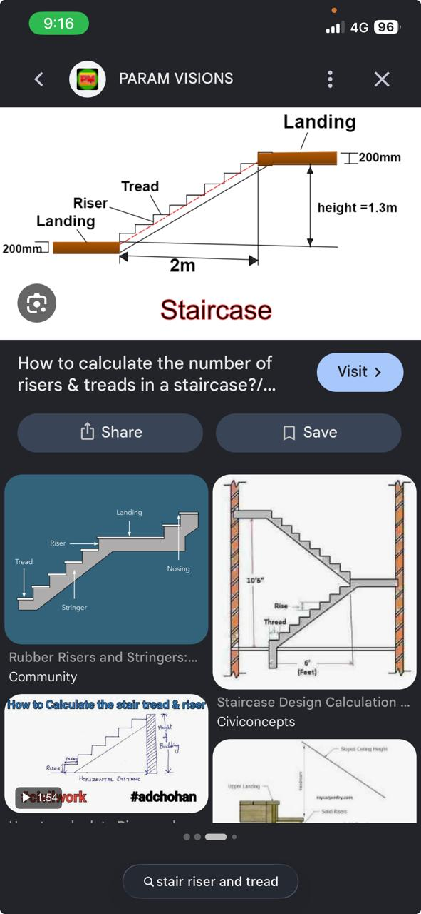
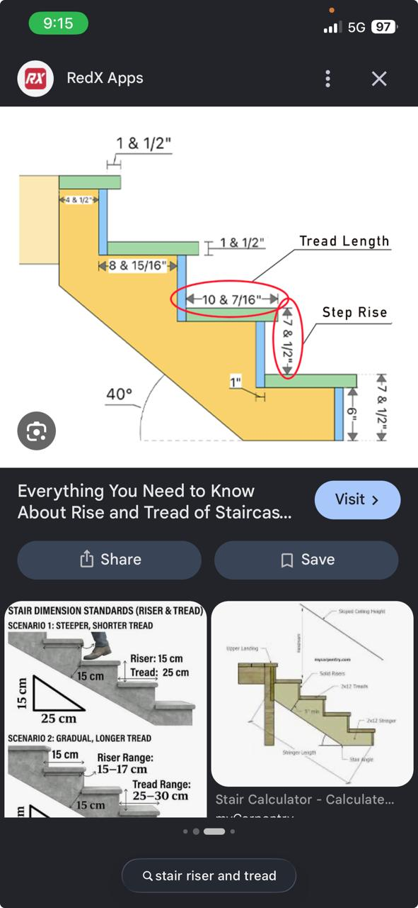
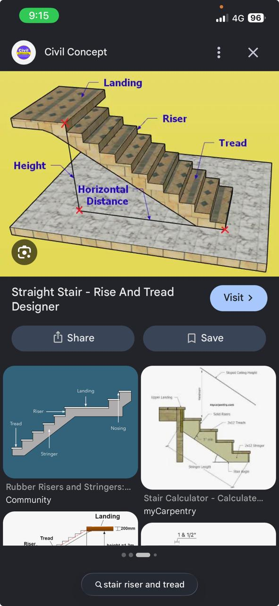
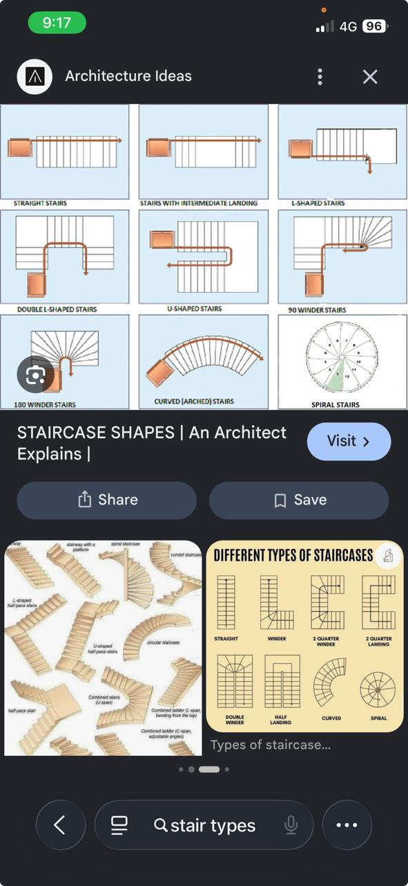

Model: Straight Flight
Angle / Pitch: 33.9°
Total Run: 3900 mm

Stair Rise & Tread Calculation Diagram
Standard architectural representation showing total height, landed run distance (2m), step riser height, and landing slab thickness (200mm).

Step Geometry & Stringer Pitch Standards
Detailed breakdown of tread length (10 7/16"), step rise (7 1/2"), nosing overhang, stringer cut line, and 40° pitch angle.

Straight Stair Flight Isometric Concept
Visual perspective of flight landing, individual step risers, tread width, and total horizontal run projection.

Staircase Shapes & Typology Guide
Comprehensive layout chart including Straight, L-Shaped, Double L-Shaped, U-Shaped, 90/180 Winder, Curved, and Spiral stair designs.